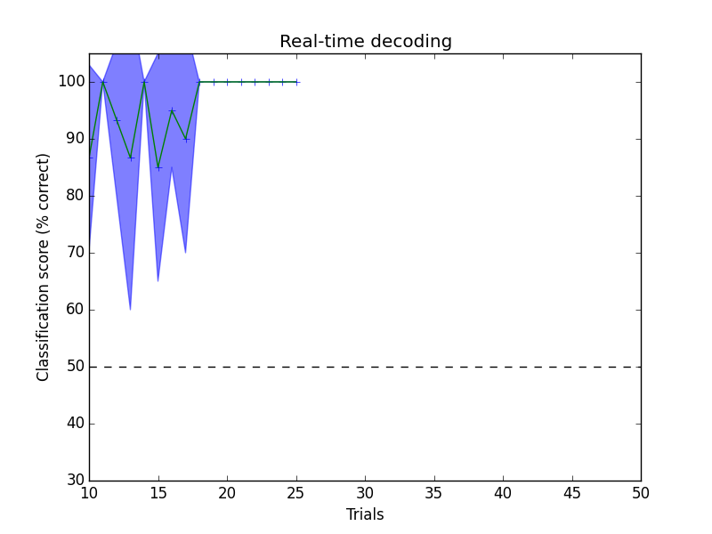

Note
Click here to download the full example code
Supervised machine learning applied to MEG data in sensor space. Here the classifier is updated every 5 trials and the decoding accuracy is plotted.
Out:
Opening raw data file /home/circleci/mne_data/MNE-sample-data/MEG/sample/sample_audvis_filt-0-40_raw.fif...
Read a total of 4 projection items:
PCA-v1 (1 x 102) idle
PCA-v2 (1 x 102) idle
PCA-v3 (1 x 102) idle
Average EEG reference (1 x 60) idle
Range : 6450 ... 48149 = 42.956 ... 320.665 secs
Ready.
Current compensation grade : 0
Reading 0 ... 41699 = 0.000 ... 277.709 secs...
No baseline correction applied
Not setting metadata
4 projection items activated
Just got epoch 1
Just got epoch 2
Just got epoch 3
Just got epoch 4
Just got epoch 5
Just got epoch 6
Just got epoch 7
Just got epoch 8
Just got epoch 9
Just got epoch 10
Just got epoch 11
Just got epoch 12
Just got epoch 13
Just got epoch 14
Just got epoch 15
Just got epoch 16
Just got epoch 17
Just got epoch 18
Just got epoch 19
Just got epoch 20
Just got epoch 21
Just got epoch 22
Just got epoch 23
Just got epoch 24
Just got epoch 25
Just got epoch 26
Just got epoch 27
Just got epoch 28
Just got epoch 29
Just got epoch 30
Just got epoch 31
Just got epoch 32
Just got epoch 33
Just got epoch 34
Just got epoch 35
Just got epoch 36
Just got epoch 37
Just got epoch 38
Just got epoch 39
Just got epoch 40
Just got epoch 41
Just got epoch 42
Just got epoch 43
Just got epoch 44
Just got epoch 45
Just got epoch 46
Just got epoch 47
Just got epoch 48
Just got epoch 49
Just got epoch 50
# Authors: Mainak Jas <mainak@neuro.hut.fi>
#
# License: BSD (3-clause)
import numpy as np
import matplotlib.pyplot as plt
from sklearn import preprocessing
from sklearn.linear_model import LogisticRegression
from sklearn.pipeline import Pipeline
from sklearn.model_selection import cross_val_score, ShuffleSplit
from mne.decoding import Vectorizer, FilterEstimator
import mne
from mne.realtime import MockRtClient, RtEpochs
from mne.datasets import sample
print(__doc__)
# Fiff file to simulate the realtime client
data_path = sample.data_path()
raw_fname = data_path + '/MEG/sample/sample_audvis_filt-0-40_raw.fif'
raw = mne.io.read_raw_fif(raw_fname, preload=True)
tmin, tmax = -0.2, 0.5
event_id = dict(aud_l=1, vis_l=3)
tr_percent = 60 # Training percentage
min_trials = 10 # minimum trials after which decoding should start
# select gradiometers
picks = mne.pick_types(raw.info, meg='grad', eeg=False, eog=True,
stim=True, exclude=raw.info['bads'])
# create the mock-client object
rt_client = MockRtClient(raw)
# create the real-time epochs object
rt_epochs = RtEpochs(rt_client, event_id, tmin, tmax, picks=picks, decim=1,
reject=dict(grad=4000e-13, eog=150e-6), baseline=None,
isi_max=4.)
# start the acquisition
rt_epochs.start()
# send raw buffers
rt_client.send_data(rt_epochs, picks, tmin=0, tmax=90, buffer_size=1000)
# Decoding in sensor space using a linear SVM
n_times = len(rt_epochs.times)
scores_x, scores, std_scores = [], [], []
# don't highpass filter because it's epoched data and the signal length
# is small
filt = FilterEstimator(rt_epochs.info, None, 40, fir_design='firwin')
scaler = preprocessing.StandardScaler()
vectorizer = Vectorizer()
clf = LogisticRegression(solver='lbfgs')
concat_classifier = Pipeline([('filter', filt), ('vector', vectorizer),
('scaler', scaler), ('svm', clf)])
data_picks = mne.pick_types(rt_epochs.info, meg='grad', eeg=False, eog=False,
stim=False, exclude=raw.info['bads'])
ax = plt.subplot(111)
ax.set_xlabel('Trials')
ax.set_ylabel('Classification score (% correct)')
ax.set_title('Real-time decoding')
ax.set_xlim([min_trials, 50])
ax.set_ylim([30, 105])
plt.axhline(50, color='k', linestyle='--', label="Chance level")
plt.show(block=False)
for ev_num, ev in enumerate(rt_epochs.iter_evoked()):
if ev_num >= 50: # stop at 50
break
print("Just got epoch %d" % (ev_num + 1))
if ev_num == 0:
X = ev.data[np.newaxis, data_picks, :]
y = int(ev.comment) # the comment attribute contains the event_id
else:
X = np.concatenate((X, ev.data[np.newaxis, data_picks, :]), axis=0)
y = np.append(y, int(ev.comment))
if ev_num >= min_trials and ev_num % 5 == 0:
cv = ShuffleSplit(5, test_size=0.2, random_state=42) # 3 for speed
scores_t = cross_val_score(concat_classifier, X, y, cv=cv,
n_jobs=1) * 100
std_scores.append(scores_t.std())
scores.append(scores_t.mean())
scores_x.append(ev_num)
# Plot accuracy
plt.plot(scores_x[-2:], scores[-2:], '-x', color='b',
label="Classif. score")
ax.plot(scores_x[-1], scores[-1])
hyp_limits = (np.asarray(scores) - np.asarray(std_scores),
np.asarray(scores) + np.asarray(std_scores))
fill = plt.fill_between(scores_x, hyp_limits[0], y2=hyp_limits[1],
color='b', alpha=0.5)
plt.pause(0.01)
plt.draw()
ax.collections.remove(fill) # Remove old fill area
plt.fill_between(scores_x, hyp_limits[0], y2=hyp_limits[1], color='b',
alpha=0.5)
plt.draw() # Final figure
Total running time of the script: ( 0 minutes 28.371 seconds)
Estimated memory usage: 129 MB